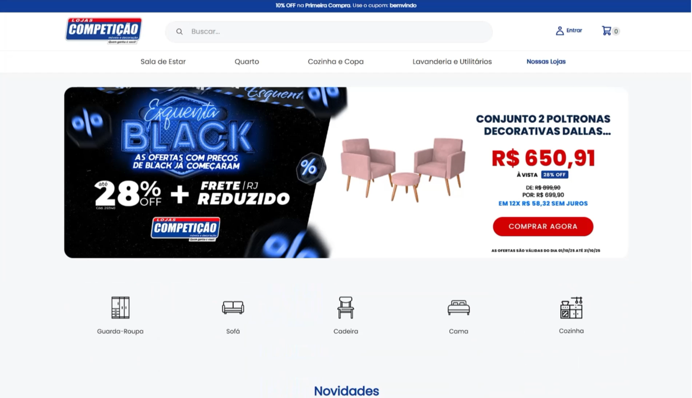
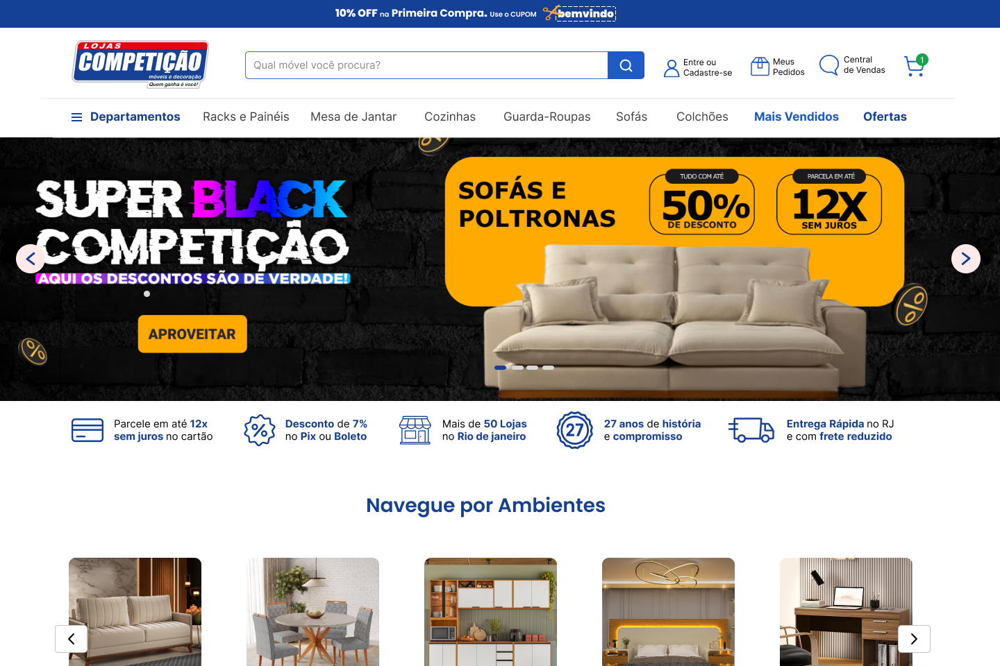
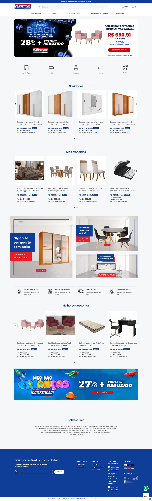
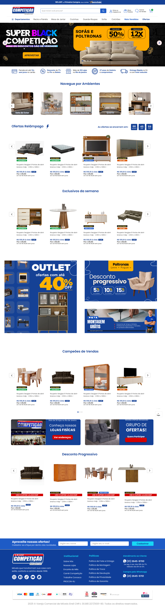

◆ MISSÃO CONCLUÍDA ◆
Lojas Competição
Redesign de UI para o e-commerce da Lojas Competição, rede com mais de 50 lojas físicas e 27 anos de história no Rio de Janeiro. O desafio: deixar a jornada de compra mais clara, organizada e persuasiva sem perder a identidade visual da marca.


O Projeto
A Lojas Competição é uma rede de móveis e decoração com mais de 50 lojas físicas no Rio de Janeiro e 27 anos de mercado. O e-commerce da marca já vendia bem, mas a experiência de navegação estava carregada: banners disputando atenção, poucas pistas visuais pra guiar a decisão de compra e nenhuma ponte clara entre o site e a força da marca nas lojas físicas.
O objetivo do redesign foi simples de descrever e difícil de executar: manter a identidade visual (azul, vermelho e o tom "descontão" da marca), mas reorganizar a hierarquia da página pra reduzir ruído, aumentar a confiança e facilitar achar o que se procura.
O problema
Layout denso, sem uma navegação clara por ambiente ou categoria, e pouco apoio à decisão além dos banners de desconto.
O objetivo
Criar hierarquia visual, reforçar urgência e prova social, e conectar o site à experiência das lojas físicas.
A restrição
Preservar a identidade de marca já reconhecida pelos clientes: nada de recomeçar do zero.
Antes
A home original concentrava boa parte do esforço nos banners de desconto. Depois deles, a página seguia direto para grades de produto, sem uma navegação por ambientes, sem senha de urgência nas ofertas e sem nenhuma seção dedicada a gerar confiança (a única menção institucional era um parágrafo curto de "Sobre a Loja", lá no rodapé).

O Redesign
Na nova versão, a home ganhou uma navegação por ambientes logo abaixo do banner principal (Sala de Estar, Sala de Jantar, Cozinha, Quarto...), pensada pra quem chega ao site já com um cômodo em mente. Um contador regressivo nas Ofertas Relâmpago traz senso de urgência real, e as vitrines foram segmentadas por intenção de compra: Exclusivos da Semana, Outlet e Desconto Progressivo, cada uma falando com um tipo diferente de comprador.
Também entraram elementos de confiança que não existiam antes: uma seção de Campeões de Venda (prova social), uma chamada pra conhecer as lojas físicas e um convite pra entrar no grupo de ofertas, conectando o e-commerce ao resto da experiência da marca. O rodapé foi reorganizado em blocos claros: captura de e-mail, institucional, atendimento e formas de pagamento.
